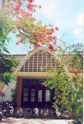
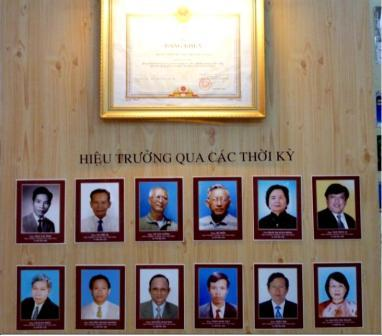

TRƯỜNG THPT Phan Thành Tài
NỬA THẾ KỈ XÂY DỰNG VÀ PHÁT TRIỂN

Nằm ở một vị trí khiêm nhường trên đường Ông Ích Đường Quận Cẩm Lệ, với diện tích khá nhỏ bé chỉ khoảng hơn 3.000 m2, cảnh quan bình dị, những gốc phượng già, hàng bàng xanh mướt, ba dãy phòng học hai tầng lầu xinh xắn, ngôi trường đã kiêu hãnh đi qua thời gian vẫn với cái tên có từ ngày đầu tiên thành lập : Phan Thành Tài Thành lập từ năm 1961, cho đến hôm nay, Trường THPT Phan Thành Tài đã đi qua gần năm mươi năm thăng trầm, trực tiếp chứng kiến những biến thiên lịch sử. Trong cuộc kháng chiến chống Mĩ cứu nước, nhiều học sinh của trường đã rời mái trường ra đi cầm súng chiến đấu giải phóng quê hương, có những người đã ngã xuống vì nền tự do của dân tộc. Sau ngày đất nước thống nhất, lịch sử ngôi trường lại được viết tiếp những trang mới. Cùng với những bước chuyển mình của Đà Nẵng thân yêu trong những năm tháng vượt lên gian khổ, thử thách để tự tin đổi mới, trường Phan Thành Tài cũng từng bước vững vàng khẳng định vị thế của mình trong sự nghiệp giáo dục của Thành phố quê hương.Thời gian qua đi đã để lại dấu ấn trên những gốc phượng già 50 mùa tuổi, trên những bức tường vôi, trên khung cửa gỗ ngày xưa đã thay màu qua bao mùa mưa nắng…Thời gian - ấy là sự nối tiếp của những thế hệ Thầy cô giáo ở Phan Thành Tài. Rất nhiều học sinh đã trở về trường cũ để làm Thầy trong niềm hạnh phúc được gắn bó với ngôi trường, với Thầy của mình, với cả học trò mình nay đã là đồng nghiệp. Thời gian làm nên vẻ đẹp riêng không thể lẫn của ngôi trường bé nhỏ Hòa Vang mà ai đã đến rồi đi hẳn sẽ không quên… Trường THPT Phan Thành Tài đã làm nên bề dày truyền thống của mình bằng sự cống hiến của các thế hệ thầy cô giáo, bằng sự nỗ lực không ngừng của các thế hệ học sinh. Truyền thống hiếu học đã trở thành niềm tự hào của học sinh Hòa Vang. Học trò vùng ngoại ô “ một chân đồng, một chân lớp” nhưng có ý chí vượt khó, vượt khổ để giờ đây, bao nhiêu người đã thành danh trên rất nhiều lĩnh vực chính trị, văn hóa, khoa học, kinh tế, …Họ đã và đang cống hiến sức lực và trí tuệ của mình cho Đất nước. Ba tiếng “ Phan Thành Tài” đã theo bao lớp học trò đi xa . Nhưng, cũng hai tiếng ấy thôi đã có sức níu bao người trở về. Truyền thống ân tình ân nghĩa luôn được Thầy và Trò trường Hòa Vang gìn giữ và phát huy, để mái trường luôn là nơi tụ hội của những tấm lòng…Với chất lượng dạy và học ngày càng được nâng lên, nhiều năm qua, trường luôn đứng ở vị trí thứ ba của Thành phố về tỉ lệ thi đỗ Tốt nghiệp phổ thông, Đại học Cao đẳng, Thi Học sinh giỏi Thành phố. Nhiều năm liền Trường đạt trường Tiên tiến xuất sắc của Thành phố. Có thể điểm lại những thành tích của Trường qua các năm gần đây như sau:
- Bằng khen của Bộ giáo dục và đào tạo năm 2003-2004
- Bằng khen của Thủ tướng Chính phủ năm 2004-2005
- Bằng khen của Chủ tịch Ủy ban nhân dân Thành phố năm 2006- 2007
- Giấy khen của Sở Giáo dục và đào tạo năm 2007 – 2008
- Bằng khen của Sở Giáo dục và đào tạo năm 2008 – 2009
Chi bộ nhà trường nhiều năm liền đạt Chi bộ vững mạnh xuất sắc. Công đoàn nhà trường đạt Công đoàn vững mạnh xuất sắc. Đoàn Thanh niên được tặng nhiều Bằng khen, giấy khen của các cấp. Lịch sử không chỉ là quá khứ! Lịch sử của một ngôi trường cũng thế. Trong hiện tại và tương lai, Thầy cô giáo và học sinh trường THPT Phan Thành Tài, bằng niềm tự hào, bằng tình yêu và khát vọng, sẽ tiếp tục viết những trang sử mới, để ngôi trường tuổi 50 dẫu có già đi theo năm tháng vẫn tràn trề một sức thanh xuân, vẫn trẻ trung năng động, vẫn là điểm tựa tinh thần cho các thế hệ mai sau!
